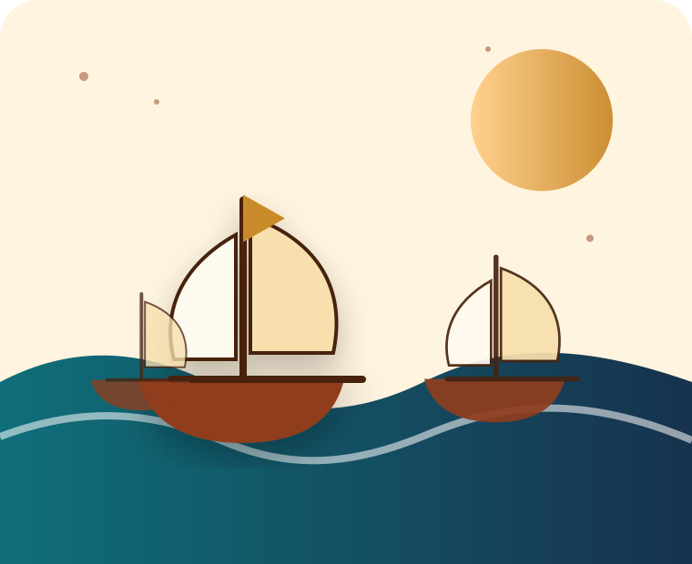

Un obiettivo commerciale
Colombo cercava una rotta occidentale verso l’Asia, puntando ad accedere più facilmente a spezie, oro e mercati orientali.
Storia • esplorazioni • conseguenze globali
Un sito storico dedicato al primo viaggio di Cristoforo Colombo: il progetto di raggiungere l’Asia navigando verso ovest, l’arrivo a Guanahani e l’inizio di un nuovo sistema di relazioni tra Europa, Africa e Americhe.

Sintesi
Il 1492 non rappresenta una “scoperta” in senso assoluto: le Americhe erano già abitate da popoli con società, culture e sistemi politici propri. Tuttavia il viaggio di Colombo avviò un contatto stabile e duraturo tra mondi prima separati.
Colombo cercava una rotta occidentale verso l’Asia, puntando ad accedere più facilmente a spezie, oro e mercati orientali.
L’arrivo nei Caraibi mise in contatto gli europei con popolazioni indigene, tra cui i Taíno, presenti nelle isole caraibiche.
Nei decenni successivi si intensificarono scambi di piante, animali, malattie, tecnologie, persone e culture.
Percorso del sito
Il sito è organizzato come una piccola mostra digitale: prima il contesto europeo, poi il viaggio, l’incontro con le popolazioni indigene e infine le conseguenze storiche.
Interazione JavaScript
Prova a rispondere: qual era l’obiettivo iniziale di Colombo?